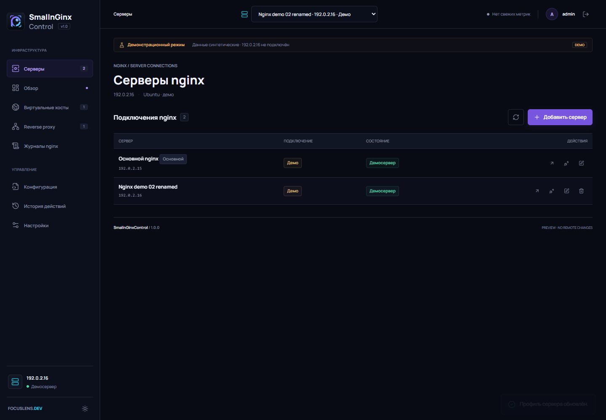

HTTPS ingress
nginx принимает TLS на 0.0.0.0:7444, Waitress остаётся закрыт на 127.0.0.1:7445.
Production HTTPS на nginx, изолированный loopback backend и новая вкладка «О программе».

Dashboard, network metrics, TOP-5 traffic и список конфигураций.
nginx принимает TLS на 0.0.0.0:7444, Waitress остаётся закрыт на 127.0.0.1:7445.
Self-signed сертификат с IP/DNS SAN создаётся автоматически; перевыпуск и замена PEM-пары доступны в настройках.
WHOIS expiry для публичных hosts/proxy, обновление раз в сутки и при подключении к SSH-серверу; wildcard сопоставляется корневому домену.
GitHub, руководство, MIT License, авторство, бесплатная лицензия и прозрачные условия на случай будущих отдельных платных услуг.

Список demo/SSH профилей; пункт «О программе» закреплён внизу меню.
Программа распространяется бесплатно по MIT License. Если появятся отдельные платные услуги или клиентский биллинг, их условия будут опубликованы отдельно; бесплатная версия не создаёт платных обязательств.
Новый хост: используйте deployment guide и installer release v1.0.3. Для существующей production-установки выполните описанную там миграцию, сохранив БД и секреты.
Self-signed сертификат шифрует соединение, но не доверен браузером автоматически. Скачайте публичную часть из `Настройки → HTTPS панели` и добавьте её в доверенные на клиентском устройстве.